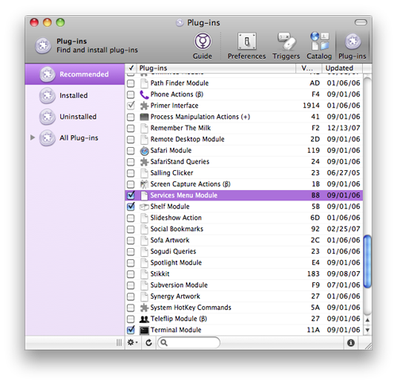
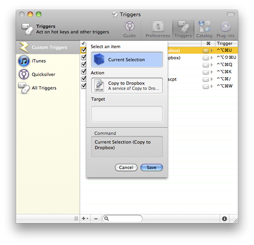

Fake CloudApp with Dropbox and Quicksilver
Recently a friend showed me CloudApp, a fantastic little app that sits in your menu bar and lets you share files almost instantly. With a quick keystroke you upload a file to their servers and get a public URL to share with anyone. Neato.
However, with a basic (free) CloudApp account you are limited in the size and number of uploads you can make each month. I’m also really picky about what goes in my menu bar, and I didn’t really like having an extra app running just for when I need to upload something.
My current workflow for uploading and sending files is to drag a file into my Dropbox public folder, navigate to it, right click it, and copy its public Dropbox URL. I like this because Dropbox is already running on my computer (no need for extra menu bar apps) and because I feel like I have more control over the fate of my file than with CloudApp (regardless of Dropbox’s recent legal issues). Plus there aren’t any arbitrary upload or storage space restrictions.
The one downside to this workflow is that it’s long and convoluted and lacks the magic instantaneousness of CloudApp. So I decided to make my own magical CloudApp-esque instant upload + public URL system with programs I’m already running: Dropbox and Quicksilver.
Here’s how to do it:
-
Download the “Post to Dropbox” OS X service.
-
Unzip and open the Copy to Dropbox service in Automator.
-
Optional: If you don’t want to clutter your public folder with random files, you can change the “Copy Finder Items” action in Automator to point to a subfolder in your public folder. Mine is set to “~/Dropbox/Public/Uploaded,” so I can periodically go and clear out any out of date uploads, like one-off screenshots and the like.
-
In the Run Shell Script section, replace
<DROPBOX-ID>with your Dropbox user ID (the one from your public URLs, not your e-mail address). -
If you want to use the Move to Dropbox service as well (I use both), open it and type your user ID there as well.
-
Move both services to ~/Library/Services. You can now access them from the system wide services menu. Right click on any file, go to “Services” and easily move or copy any file to your public Dropbox folder and get the URL for that file placed automatically in your clipboard.
While these services eliminate most of the clicking and dragging I was doing before, they still require three clicks (select the file, right click to navigate to the services menu, click on the service). Luckily Quicksilver simplifies the process even more. You could probably use other Quicksilver-esque programs like Alfred and the like to get the universal service keyboard shortcuts.
-
Enable the “Services Menu Module” in Quicksliver’s plug-ins sheet in its preferences (⌘ + ,).
 -
Go to Preferences and make sure “Enable advanced features” is checked.
-
Go to Catalog > Quicksilver and check “Proxy Objects”
-
Create a new trigger to pipe the current selection through each of the services. I use ⌃⌥⌘U for Copy to Dropbox and ⌃⌥⇧⌘U (essentially mashing down the whole corner of my keyboard :) ) for Move to Dropbox. 
-
Select a file, press your new keyboard shortcut, and voila—the file is instantly copied to Dropbox and you have a URL ready to paste somewhere. Pure magic :)
One of the only differences between this and CloudApp is that there’s no response after you use the service. There’s nothing to let you know that it actually happened. However, you can easily add a sound or Growl notification to the Automator service if you want some sort of response.
So there it is. Magic CloudApp functionality using Dropbox and Quicksilver!